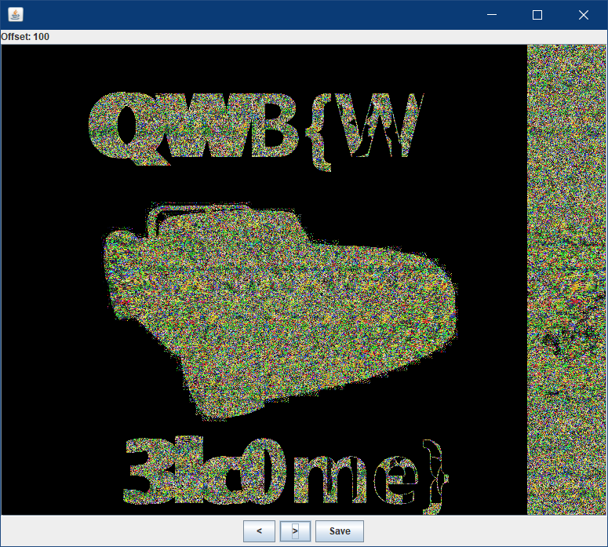
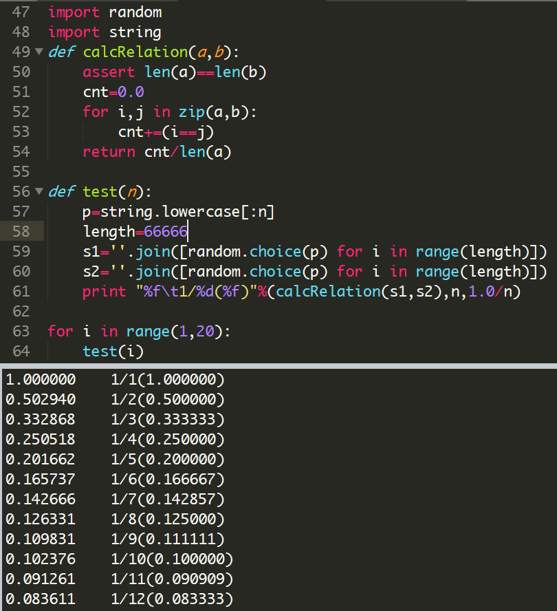
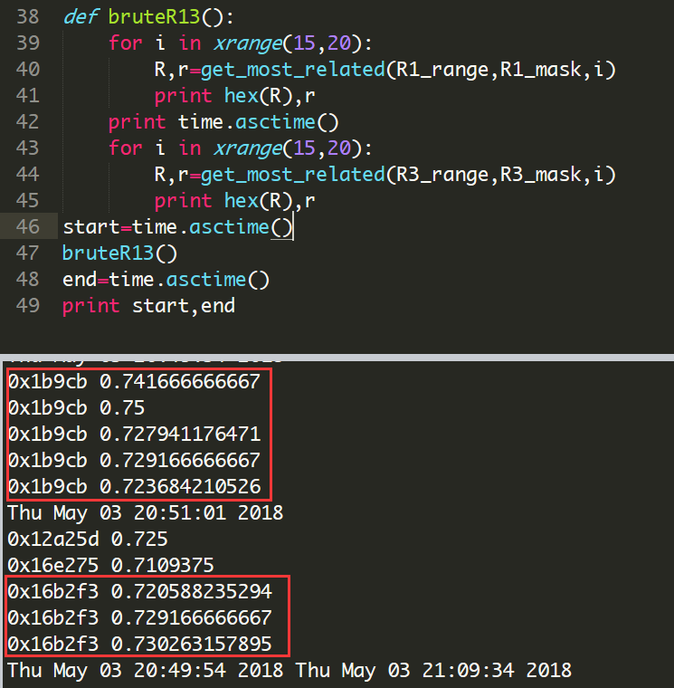
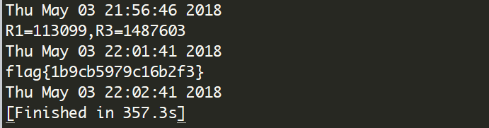
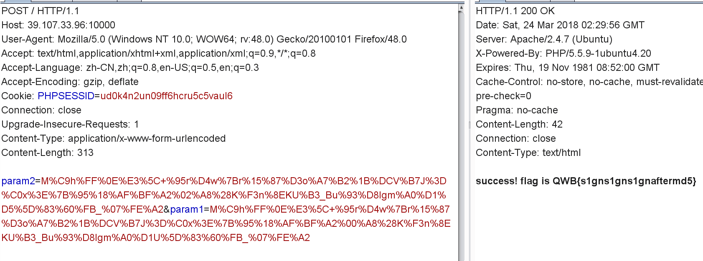
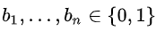
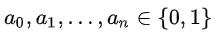
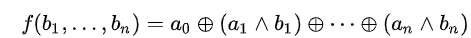
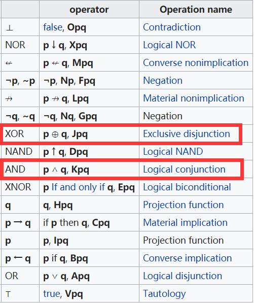

第二届强网杯全国网络安全挑战赛
MISC
Welcome
使用stegsolve打开，在Analyse->Stereogram Solver 处改变偏移即可。

Crypto
streamgame1
streamgame1.py
1 | from flag import flag |
solution
1 | def crack(key): |
streamgame2
streamgame2.py
1 | from flag import flag |
solution
1 | def crack(key): |
streamgame3
1 | from flag import flag |
solution
如果两个随机二进制串不相关，那么将它们逐位比对，有1/2的概率相等，如果是三进制串，则概率为1/3，以此类推。写个小脚本验证一下：

相反的，如果两个随机二进制串之间的存在关联，那么概率就不会是1/2了。
对于 x1,x2,x3∈{0,1} 考虑逻辑运算 out=(x1*x2)^((x2^1)*x3) ，
若x2=0 ，则out=x3 ，若x2=1 则out=x1 。
那么p(out=x3) = p(out=x3|x2=0) * p(x2=0)+ p(out=x3|x2=1) * p(x2=1)=(1+1/2) * 1/2 = 3/4 != 1/2 ，
对于x1同理有p(out=x1)=3/4 != 1/2 。
这个题目直观的想法和前两题一样，遍历R1，R2，R3三个寄存器所有可能的初始状态，但因为可能性过多在计算上是不可行的。上面提到的这种相关性提供了一种各个击破的思路：遍历R1的所有可能，计算其与out的相关性，逼近3/4的就可能是其初始状态，越逼近可能性越大，对R3同理。
这种基于相关性的攻击称为相关攻击（correlation attack），其分而治之的技巧可以降低爆破复杂度，比相关攻击复杂度更低的都可以称为快速相关攻击（也有一些经典的手法，不过目前还没很理解）。
本题采用相关攻击就可以在可接受时间内得到R1，R3的初始状态。
初始状态的可选空间越大，就需要越长的结果序列来判定。R1，R3分别大概7字节和17字节就足够了。

然后爆破R2就不难了。

全部代码如下：
1 | import time |
参考：http://blog.leanote.com/post/xp0intjnu@gmail.com/66c91498d13b
streamgame4
streamgame4.py
1 | from flag import flag |
solution
1 | def crack(key): |
nextrsa
nc 39.107.33.90 9999
这是一个RSA相关安全问题的合集，是个很有意思值得一做的题目。
题目源码已公开在GitHub：https://github.com/fpbibi/nextrsa
可参考以下链接：
- http://www.cnblogs.com/WangAoBo/p/8654120.html
- https://www.anquanke.com/post/id/84632
- https://err0rzz.github.io/2017/11/14/CTF%E4%B8%ADRSA%E5%A5%97%E8%B7%AF/
- https://bbs.ichunqiu.com/thread-36705-1-1.html
Web
Web签到
The Fisrt Easy Md5 Challenge
1 | if($_POST['param1']!=$_POST['param2'] && md5($_POST['param1'])==md5($_POST['param2'])){ |
可用PHP弱类型或者数组绕过。
post param1=QNKCDZO¶m2=240610708 或者 param1[]=¶m2[]=0 。
The Second Easy Md5 Challenge
1 | if($_POST['param1']!==$_POST['param2'] && md5($_POST['param1'])===md5($_POST['param2'])){ |
可用PHP数组绕过。post param1[]=¶m2[]=0 。
Md5 Revenge Now!
1 | if((string)$_POST['param1']!==(string)$_POST['param2'] && md5($_POST['param1'])===md5($_POST['param2'])){ |
绕不过去，但是因为哈希是从无限集到有限集的映射，必然存在两个不同的消息拥有相同的哈希值，而且这种消息对已经可以被构造了。（工具： https://xz.aliyun.com/t/2232 ）
1 | s1="4dc968ff0ee35c209572d4777b721587d36fa7b21bdc56b74a3dc0783e7b9518afbfa200a8284bf36e8e4b55b35f427593d849676da0d1555d8360fb5f07fea2" |
1 |
|

附件
[streamgame1](StreamGame1_zip_1y829eyn1723891s827h3 -.zip)
题目备份
https://github.com/jas502n/2018-QWB-CTF
stream
奇怪的心路~
streamgame3.py
1 | from flag import flag |
solution
因为抽头较少，所以生成序列的每一位都只和初始状态的少数几位有关，如果每一轮分开考虑，再手动合并初始状态，遍历集合会小非常多。折腾了很久才发现自己要写的是递归，写了很多代码但是不work🤔，到比赛最后也没调出来。
赛后总算按我的意愿跑起来了，但是马上发现自己太天真，这代码就是跑到爆栈也没办法得到结果，看来还是要认真理解原理，从算法上突破，暴力 x 不可取。下面是我已被证明不可取的想法（我居然在试图攻破安全高效的伪随机序列发生器，真是naive啊）：
1 | #coding:utf8 |
据说是考察快速相关攻击，与WHCTF一题相似，在 https://www.xctf.org.cn/library/details/whctf-writeup/ 搜索Bornpig即可看到相关信息。
我还找到一些相关信息，但暂时没有时间深入解决。
去了解了一下线性反馈移位寄存器，理解一些概念，对代码做了些注释。
- In electronics, a flip-flop or latch is a circuit that has two stable states and can be used to store state information.
flip-flop（触发器）或latch（锁存器）都是某种电路，都根据输入改变存储的状态信息，区别是前者当时钟有效时改变才发生，也就是同步的，后者是时钟无关的，也就是异步的。 - a shift register is a cascade of flip flops 。
移位寄存器是触发器的级联。 - In computing, a linear-feedback shift register (LFSR) is a shift register whose input bit is a linear function of its previous state.
线性反馈移位寄存器是一个移位寄存器，它的输入位是它先前状态的线性函数。 - 线性指的是齐次性（
f(αx) = αf(x) for all α）和可加性（f(x + y) = f(x) + f(y)），两者在有理数域是等价的。上述定义中的线性函数实际上指的是布尔代数中的线性函数，形式上这样表述：
对于
，存在
，使得
，那么f是一个线性函数。（其中的符号分别表示逻辑异或和逻辑与，详情如下图）

~~有一位朋友在这篇文章提到一种基于outbit=(x1*x2)^((x2^1)*x3) 从而当x1==x3 时x1==outbit 来略过R2而只爆破R1和R3的做法，我实现了一下，感觉复杂度仍然不可接受。~~~~
1 | def lfsr(R,mask): |
受他启发，我有了个基于outbit==(x2==1?x1:x3) 爆破的想法，但看起来也不可操作。
投入太多时间了，还是等官方WP吧：）